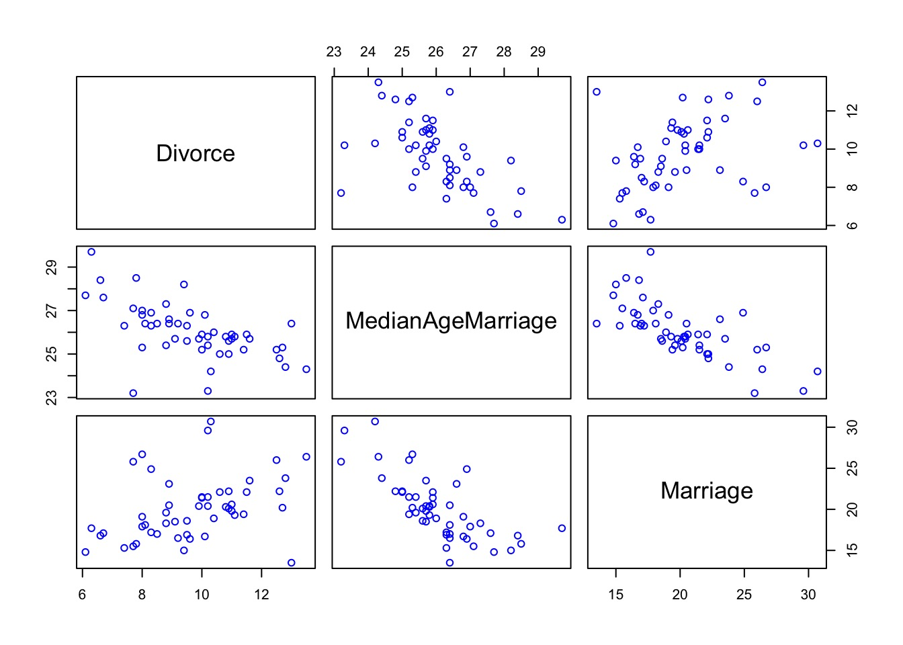
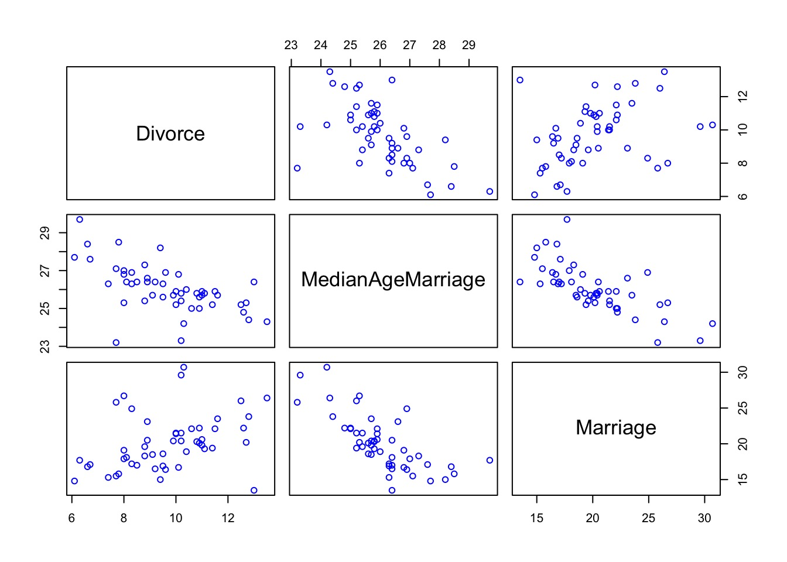
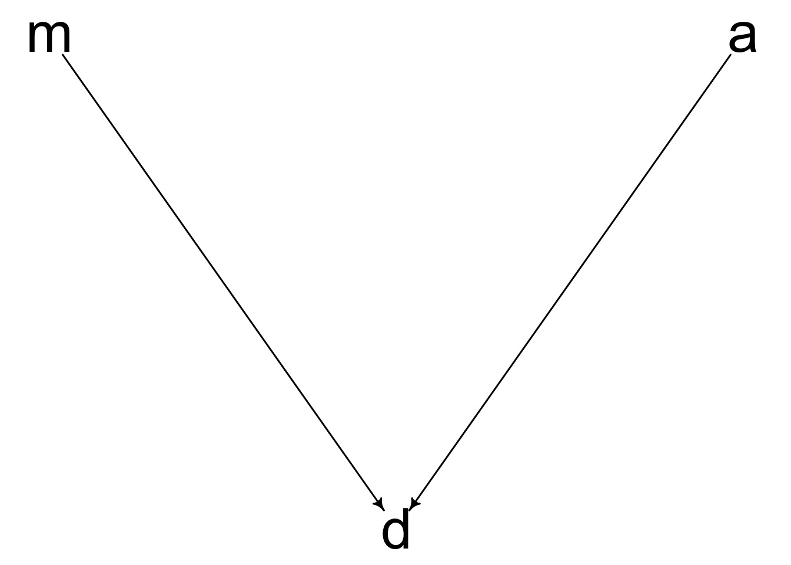
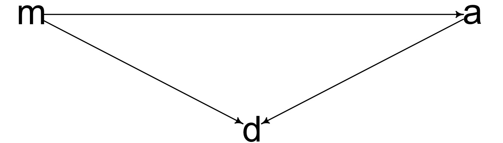
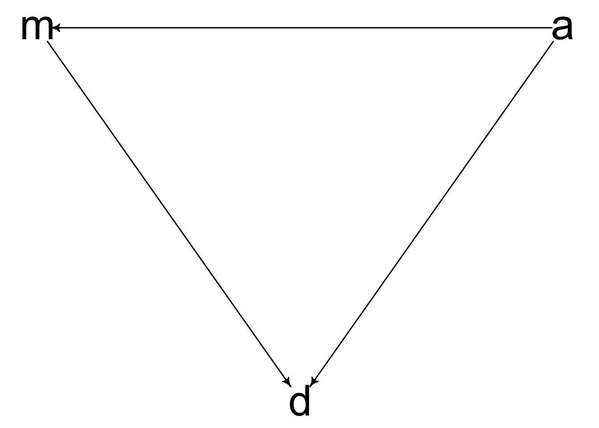
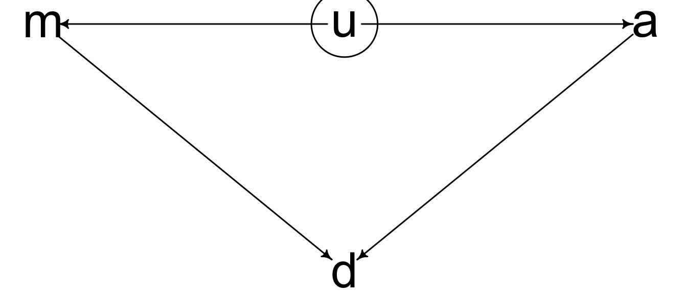
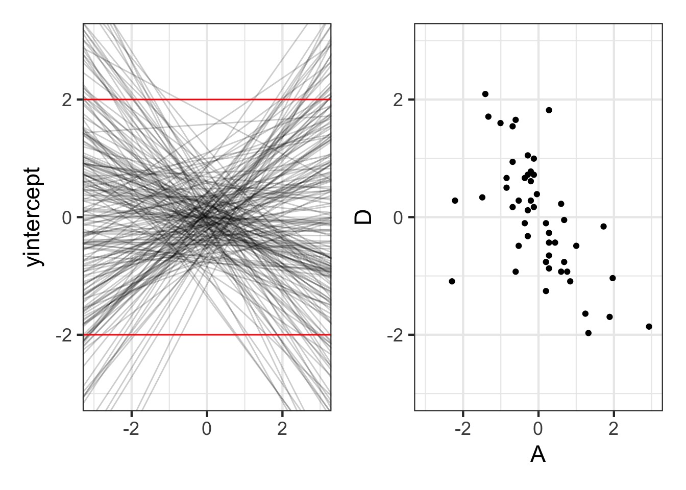
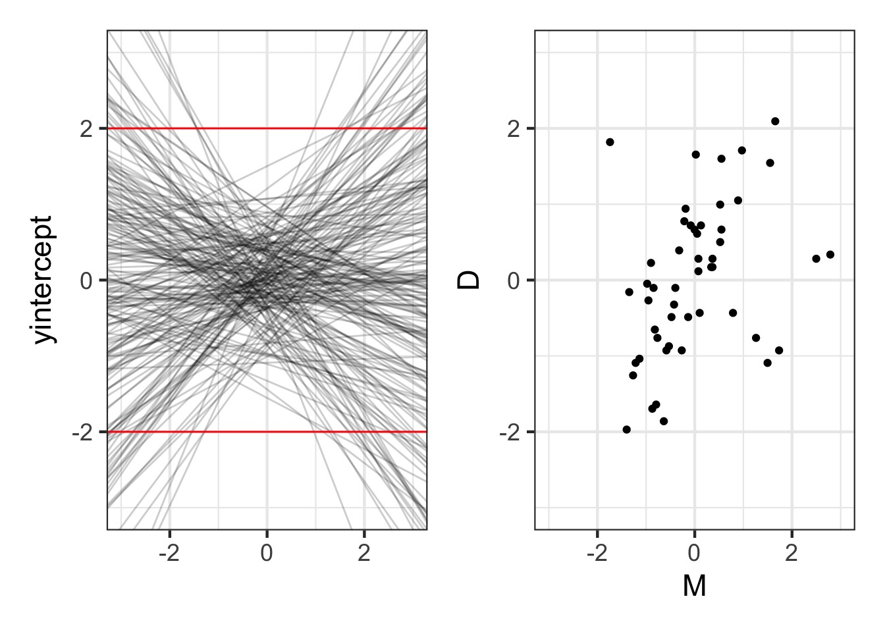

Multiple Predictors in a Bayesian Framework
Evaluating a Model with Multiple Predictors
Testing Mediation
Categorical Variables
Controlling for confounds
Dealing with multiple causation
Interactions (soon)

Multicollinearity
Overfitting
Loss of precision in estimates
Interpretability
Which of these is your model?




Or use standardize() or write a function
Likelihood:
\(y_i \sim Normal(\mu_i, \sigma)\)
Data Generating Process
\(\mu_i = \alpha + \beta_1 x1_i + \beta_2 x2_i + ...\)
Prior:
\(\alpha \sim Normal(0, 0.5)\)
\(\beta_j \sim Normal(0, 0.5)\) prior for each
\(\sigma \sim Exp(1)\)
Likelihood:
\(D_i \sim Normal(\mu_i, \sigma)\)
Data Generating Process
\(\mu_i = \alpha + \beta_m M_i + \beta_a A_i\)
Prior:
\(\alpha \sim Normal(0, 0.5)\) because standardized
\(\beta_m \sim Normal(0, 0.5)\) because standardized
\(\beta_a \sim Normal(0, 0.5)\) because standardized
\(\sigma \sim Exp(1)\) because standardized
Prior for Marriage Age N(0,0.5)
prior_divorce <- extract.prior(fit, n = 200) |>
as_tibble()
p1 <- ggplot(data = prior_divorce) +
geom_abline(aes(slope = bA, intercept = a), alpha = 0.2) +
xlim(c(-3,3)) + ylim(c(-3,3)) +
geom_hline(yintercept = c(-2,2), color = "red") +
labs(y = "D", x = "A", subtitle = "From Prior")
d1 <- ggplot(data = WaffleDivorce) +
geom_point(aes(x = A, y = D)) +
xlim(c(-3,3)) + ylim(c(-3,3)) +
labs(subtitle = "Z-Transformed Data")
p1 + d1Prior for Marriage Rate N(0, 0.5)
What is the predictive value of one variable once all others have been accounted for?
We want a coefficient that explains the unique contribution of a predictor
What is the effect of x1 on y after we take out the effect of x2 on x1?
Multiple Predictors in a Bayesian Framework
Evaluating a Model with Multiple Predictors
Testing Mediation
Categorical Variables
Note correlation between bM and bA - when one is high the other is as well, but see scale
cr.plots from the car package
Compute predictor 1 ~ all other predictors
Take residual of predictor 1
Regress predictor 1 on response
Counterfactual: A conditional statement of “if this, then …”
Powerful way of assessing models - “If we had seen Marriage Rate as x, then the effect of Median age on divorce rate would be…”
Shows model implied predictions, often at levels nor observed
Estimate effect of Age and Rate controlling for one another
Estimate total, direct, & indirect effect of Age on Divorce
(This is Structural Equation Modeling)
Effect of Age on Divorce holding Rate at it’s Mean
Multiple Predictors in a Bayesian Framework
Evaluating a Model with Multiple Predictors
Testing Mediation
Categorical Variables
The effect of one variable has a direct and indirect effect
The indirect effect is mediated through another variable.
Multiple types of mediation
We can look at strength of indirect and direct effects to differentiate
Likelihoods:
\(D_i \sim Normal(\mu_{di}, \sigma_d)\)
\(M_i \sim Normal(\mu_{mi}, \sigma_m)\)
Data Generating Processes
\(\mu_{di} = \alpha_d + \beta_m M_i + \beta_a A_i\)
\(\mu_{mi} = \alpha_m + \beta_{ma} A_i\)
Prior:
\(\alpha_d \sim Normal(0, 0.5)\)
\(\alpha_m \sim Normal(0, 0.5)\)
\(\beta_m \sim Normal(0, 0.5)\)
\(\beta_a \sim Normal(0, 0.5)\)
\(\beta_{ma} \sim Normal(0, 0.5)\)
\(\sigma_d \sim Exp(1)\)
\(\sigma_m \sim Exp(1)\)
mod_med <- alist(
## A -> D <- M
#likelihood
D ~ dnorm(mu, sigma),
#data generating processes
mu <- a + bM*M + bA * A,
# Priors
a ~ dnorm(0, 0.5),
bM ~ dnorm(0, 0.5),
bA ~ dnorm(0, 0.5),
sigma ~ dunif(0,10),
## A -> M
#likelihood
M ~ dnorm(mu_m, sigma_m),
#data generating processes
mu_m <- a_m + bMA*A,
# Priors
a_m ~ dnorm(0, 0.5),
bMA ~ dnorm(0, 0.5),
sigma_m ~ dunif(0,10)
)
fit_med <- quap(mod_med, data=WaffleDivorce)We can draw coefficients and calculate using our DAG
Multiple Predictors in a Bayesian Framework
Evaluating a Model with Multiple Predictors
Testing Mediation
Categorical Variables
Lots of ways to write models with categorical variables
We all hate R’s treatment contrasts
Two main ways to write a model
Y <- a + b * x_is_levelas.numeric()y <- a[level] clade species kcal.per.g perc.fat perc.protein
1 Strepsirrhine Eulemur fulvus 0.49 16.60 15.42
2 Strepsirrhine E macaco 0.51 19.27 16.91
3 Strepsirrhine E mongoz 0.46 14.11 16.85
4 Strepsirrhine E rubriventer 0.48 14.91 13.18
5 Strepsirrhine Lemur catta 0.60 27.28 19.50
6 New World Monkey Alouatta seniculus 0.47 21.22 23.58
perc.lactose mass neocortex.perc
1 67.98 1.95 55.16
2 63.82 2.09 NA
3 69.04 2.51 NA
4 71.91 1.62 NA
5 53.22 2.19 NA
6 55.20 5.25 64.54Build a model explaing the kcal.per.g of milk
First try 2 continuous predictors
Add clade
Bonus: Can you make an interaction (try this last)